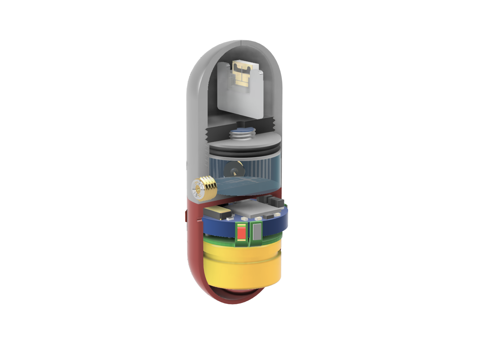
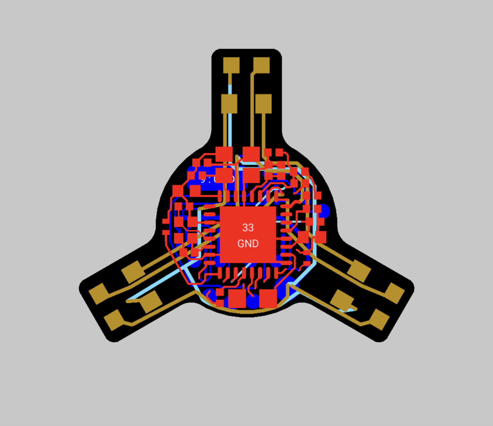

Lab for Translational Engineering, 2024–2025
SPLASH is an ingestible device that emits a jet of liquid biologics into gastric tissue. Jet actuation, direction, and timing were previously controlled by a stack of two PCBs; one for control, and the second for optical sensing. This configuration led to persistent reliability problems. My role in this project was to redesign the electronics to ensure consistent performance in a capsule form factor.
The previous stacked boards interfaced through mezzanine connectors, which were prone to electrical shorting and unstable connections. Flexible regions meant to fold optical sensing circuitry outward often fractured under repeated bending, and the high currents required to trigger the liquid jet regularly damaged traces and components. In addition, MCU programming pads were located on detachable sections that had to be cut away, preventing board reflashing and reuse.

To overcome these challenges, I consolidated the two stacked boards into a single four-layer rigid-flex PCB using Altium Designer. This eliminated the fragile connectors and reduced the capsule’s axial length by 4%, which created additional payload capacity. I reinforced the flexible regions with stiffeners, re-routed traces and updated component choices to handle higher currents. Further, I relocated MCU programming pads onto the main board body, enabling repeatable firmware flashing. The redesigned system demonstrated reliable jet actuation, improved fatigue life in the flex regions, and reusability. These improvements enabled the project to advance to in vivo experimentation.